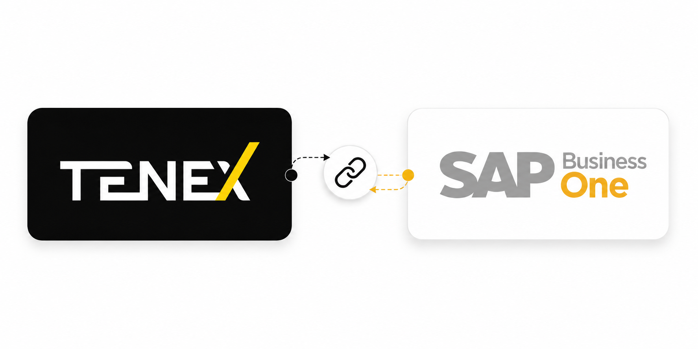

Desafio
A implementação do ERP exigia validação operacional, testes de integração e confiabilidade nos processos financeiros.
Participação na implementação do SAP Business One com foco em integração operacional, testes e homologação.
VOLTAR PARA PROJETOS
A implementação do ERP exigia validação operacional, testes de integração e confiabilidade nos processos financeiros.
Apoiar a implantação do SAP Business One, homologando fluxos, integrações e rotinas financeiras conectadas ao Tenex.
Transformação sistêmica exige testes, conciliação e entendimento profundo da operação.
Participação nas frentes operacionais da implementação do SAP Business One.
Validação de processos, regras e integrações antes da entrada em produção.
Conferência das rotinas financeiras no fluxo real da operação.
Execução de testes com massas de dados para avaliar consistência e escala.
Validação dos saldos, integrações e reflexos financeiros entre sistemas.
Acompanhamento de ajustes e melhorias após a entrada em produção.
Apoio à implementação do SAP Business One.
Validação de processos e integrações financeiras.
Conferência operacional dos fluxos no cenário real.
Testes com massa de dados e cenários de escala.
Conferência financeira entre SAP B1, Tenex e operação.
Ajustes e melhorias após o go live.
A homologação e a integração operacional deram mais confiabilidade para a transição sistêmica financeira.

Experiência em gestão financeira, indicadores estratégicos, melhoria contínua, automação e estruturação de processos, com atuação voltada para eficiência operacional e geração de resultados.
VAMOS CONVERSAR?Gestão financeira, indicadores e suporte à tomada de decisão.
Padronização, melhoria contínua e eficiência operacional.
Desenvolvimento de pessoas, organização e resultados.